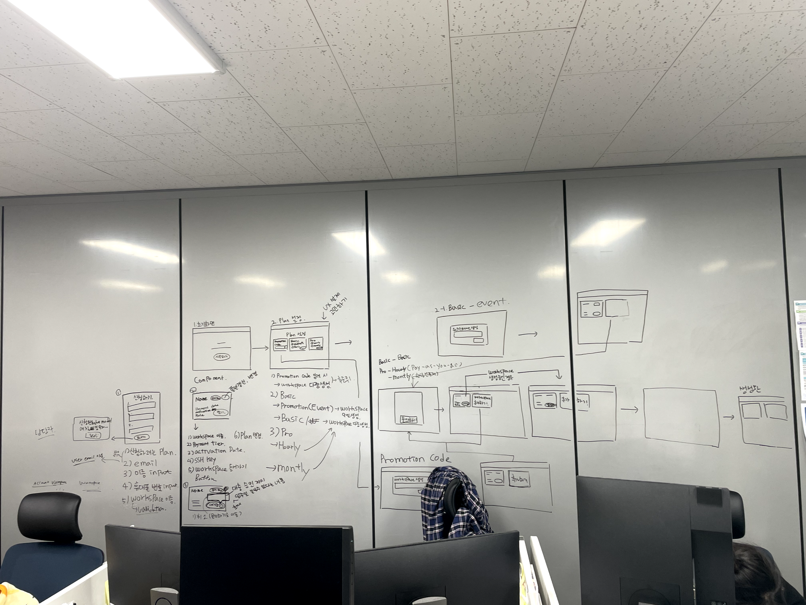
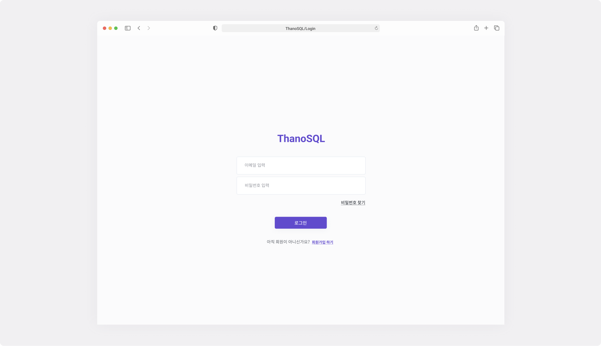
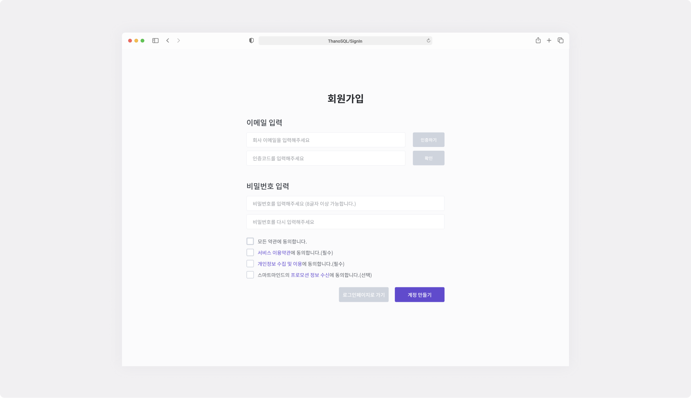
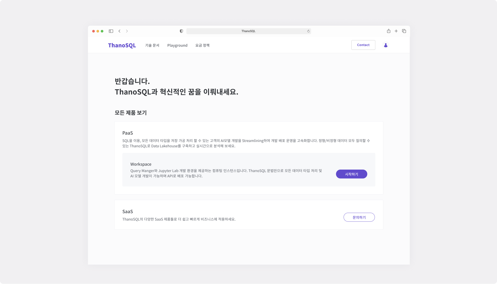
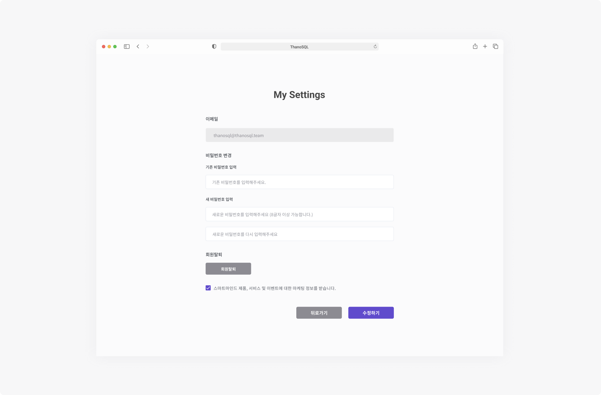

thanosql.ai

Web(DashBoard&Mobile)
PaaS / B2B
2021.12 ~ 2022.08(업데이트 중)
StoryBoard 작성
디자인 시스템 정의
UX설계
UI 디자인
Figma
Teams
Slack
Click up
ThanoSQL.ai는 ThanoSQL 서비스를 제공하고 안내하는 플랫폼입니다. 사용자가 제품을 사용할 때 어떤 이점이 있는지 알기 위해 기술 문서, Playground(ThanoSQL을 활용한 제품 시연) 및 문의하기 메뉴를 제공했습니다. 또한, 사용 방법을 이해하기 위해 Docs 메뉴를 포함시켜 사용자가 어떻게 제품을 사용해야 하는지에 대한 정보를 알 수 있게 했습니다.
ThanoSQL Service 제공 및 안내를 하는 thanosql.ai 입니다. 저는 스토리보드 작성, IA 설계, UX 설계 및 UI디자인을 도맡았습니다. 프론트엔드, 백엔드 개발자와 함께 커뮤케이션하며 프로덕트 제작에 힘썼습니다.
JThanoSQL 서비스에 빠르게 접근할 수 있도록 사용자들을 위해 통배너를 설계하고 CTA(Call to Action)를 추가했습니다. 이는 강조되어야 하는 부분이므로 배경에 그라데이션을 적용하여 강조효과를 주었습니다

로그인 페이지 입니다. 화면 중앙으로 레이아웃을 구성해 한번에 인지할 수 있게 설계했습니다.
회원가입 페이지 입니다. 사용자의 유입률을 위해 간결한 회원가입 경험(이메일 인증 -> 비밀번호 생성 -> 서비스 이용약관 및 개인정보처리방침 동의)설계를 하고 UI 디자인을 했습니다.
ThanoSQL 서비스(추후 추가 예정)를 제공하는 페이지입니다. 모든 제품을 보여 줄 수 있게 박스 리스트 형식으로 디자인 했습니다.
사용자 설정 페이지 입니다. 화면 중앙으로 레이아웃을 구성해 한번에 인지할 수 있게 설계했습니다.
해당 프로젝트는 사용자가 서비스를 사용하기 전 기초적인 사용자 경험을 구축하는 프로젝트였습니다. 이는 제일 신경 써야 하는 프로젝트였으며, 기반을 다지는 단계에서 팀원들과 (클라이언트, 서버) 더 많이 소통하고 의견을 나눌 수 있는 기회를 가졌습니다. 이 프로젝트는 디자인에 대한 기초적인 이해와 중요성을 강조하는 의미 있는 경험을 제공했습니다. 팀원들과 함께 디자인을 진행하는 과정에서 디자인의 기반이 되는 부분에 더욱 집중할 필요성을 느꼈습니다.